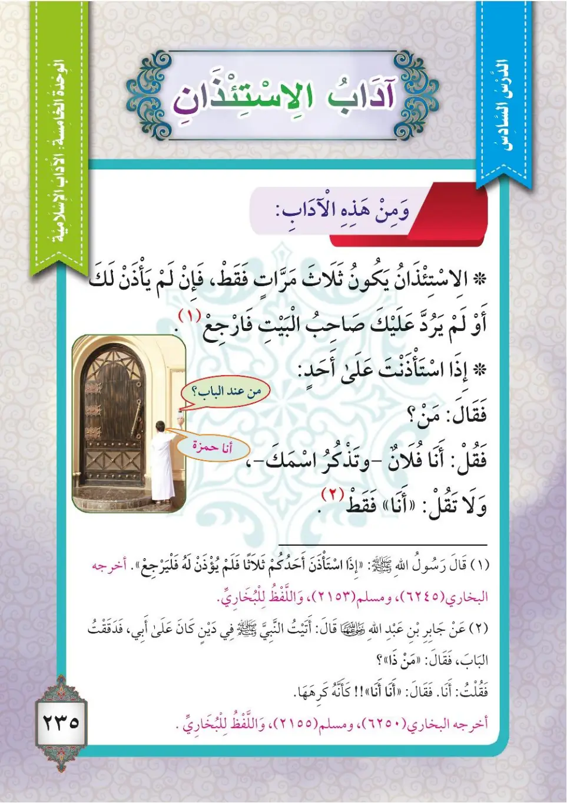
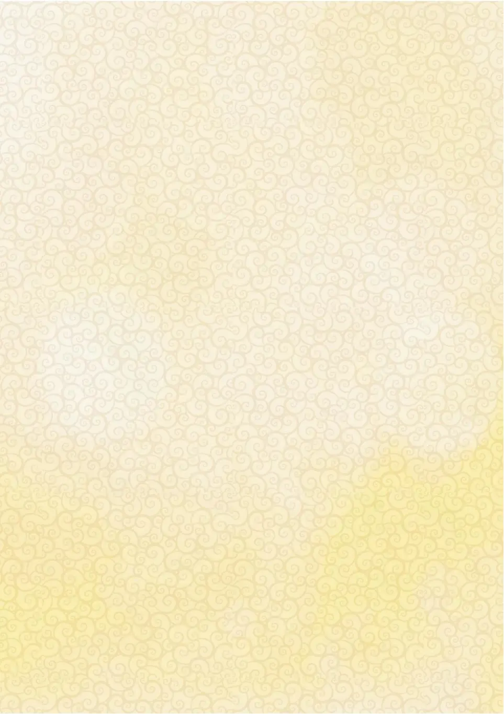

Stage 3·المرحلة الثالثة⭐ Unit 1
آدَابُ الاسْتِئْذَانِ Manners of Seeking Permission (Isti'dhan)
From the Textbookpp. 235–237


الاستئذانُ من الآدابِ الجميلةِ وحُسنِ الأخلاقِ الحسنةِ، ولذلكَ فإنَّ للمسلمِ آداباً يتحلّى بها دائماً، ومن هذهِ الآدابِ: ١- يجبُ على المسلمِ أنْ يستأذنَ قبلَ أنْ يدخلَ بيوتَ الناسِ، ولا يجوزُ لهُ أنْ يدخلَ حتى يأذنَ لهُ صاحبُ البيتِ. قال تعالى:
Al-isti'dhanu mina al-adabi al-jamilati wa husni al-akhlaqi al-hasanah, wa li-dhalika fa-inna lil-muslimi adaban yatahallatha biHi da'iman, wa min hadhihi al-adabi: 1- yajibu 'ala al-muslimi an yasta'dhina qabla an yadkhula buyuta an-nasi, wa la yajuzu laHu an yadkhula hatta ya'dhana laHu sahibu al-bayti. Qala ta'ala:
Seeking permission (isti'dhan) is from the beautiful manners and good conduct, and therefore a Muslim always observes its manners. From these manners:<br>1. A Muslim must seek permission before entering people's houses, and it is not permissible for him to enter until the owner of the house gives him permission. Allah the Exalted said:
அனுமதி கோருதல் (இஸ்திஃதான்) அழகிய நடத்தைகளில் ஒன்று. முஸ்லிம் அதன் நடத்தைகளை எப்பொழுதும் கடைப்பிடிக்க வேண்டும்:<br>1. மக்கள் வீடுகளில் நுழைவதற்கு முன் அனுமதி கோர வேண்டும்; வீட்டு உரிமையாளர் அனுமதி அளிக்கும் வரை நுழையக்கூடாது. அல்லாஹ் கூறினான்:
﴿يَا أَيُّهَا الَّذِينَ آمَنُوا لَا تَدْخُلُوا بُيُوتًا غَيْرَ بُيُوتِكُمْ حَتَّىٰ تَسْتَأْنِسُوا وَتُسَلِّمُوا عَلَىٰ أَهْلِهَا ۚ ذَٰلِكُمْ خَيْرٌ لَّكُمْ لَعَلَّكُمْ تَذَكَّرُونَ﴾
Ya ayyuha alladhina amanu la tadkhulu buyutan ghayra buyutikum hatta tast'anisu wa tusallimu 'ala ahliHa; dhalikum khayrun lakum la'allakum tadhakkarun.
O you who believe, do not enter houses other than your own houses until you make yourself known and greet their inhabitants. That is better for you; perhaps you will be reminded.
நம்பிக்கையாளர்களே! உங்கள் வீடுகள் அல்லாதவற்றில் நுழைய வேண்டாம்; (முன் அறிவித்து) தெரிந்துகொள்ளுங்கள்; வீட்டில் இருப்பவர்களுக்கு ஸலாம் கூறுங்கள். அதுவே உங்களுக்குச் சிறந்தது; நீங்கள் நினைவுபடுத்தப்படலாம்.
٢- إذا استأذنتَ للدخولِ فلم يأذنْ لكَ صاحبُ البيتِ، أو قالَ لكَ: «ارجعْ»، فارجعْ ولا تغضبْ. قال رسولُ اللهِ ﷺ: «إِذَا اسْتَأْذَنَ أَحَدُكُمْ ثَلَاثًا فَلَمْ يُؤْذَنْ لَهُ فَلْيَرْجِعْ». أخرجه البخاريُّ ومسلمٌ واللفظُ للبخاريِّ.
2- idha ista'dhanta lid-dukhuli falam ya'dhan laka sahibu al-bayti, aw qala laka: «Iriji'», fa-Irji' wa la taghdab. Qala rasulullahi ﷺ: «Idha ista'dhana ahadukum thalathan falam yu'dhan laHu fal-yarji'». Akhrajahu al-Bukhariyyu wa Muslimun wal-lafzu lil-Bukhariyyi.
2. If you ask permission to enter and the owner of the house does not give you permission, or tells you: "Go back," then go back and do not get angry. The Messenger of Allah ﷺ said: "If any of you asks permission three times and is not given permission, then let him go back." Narrated by Al-Bukhari and Muslim, the wording is of Al-Bukhari.
2. நுழைய அனுமதி கோரி, வீட்டு உரிமையாளர் அனுமதி அளிக்காவிட்டால் அல்லது "திரும்புங்கள்" என்று சொன்னால், கோபப்படாமல் திரும்பிச் செல்ல வேண்டும். "மூன்று முறை அனுமதி கோரியும் அனுமதி அளிக்கப்படாவிட்டால் திரும்பி விடுங்கள்" என்று நபி ﷺ கூறினார்கள். (புகாரி, முஸ்லிம்)
٣- الاستئذانُ ثلاثُ مراتٍ فقط؛ إذا لم يُؤذَنْ لكَ أو لم يَرُدَّ عليكَ صاحبُ البيتِ فارجعْ. ٤- إذا سُئلتَ: من؟ فقُلْ: «فلانٌ»، وتذكَّرْ اسمَكَ، ولا تقُلْ فقط: «أنا».
3- al-isti'dhanu thalathu marratin faqat; idha lam yu'dhan laka aw lam yarudda 'alayka sahibu al-bayti far-ji'. 4- idha su'ilta: man? Fa-qul: «Fulan», wa tadhakkar ismaka, wa la taqul faqat: «Ana».
3. Seeking permission is only three times; if you are not given permission or the owner of the house does not answer, then go back.<br>4. If you are asked: Who is it? Say: "So-and-so," and remember your name; do not just say: "It is me."
3. அனுமதி கோருதல் மூன்று முறை மட்டுமே; அனுமதி கிடைக்காவிட்டாலோ வீட்டுத்தலைவர் பதிலளிக்காவிட்டாலோ திரும்பிச் செல்ல வேண்டும்.<br>4. "யார்?" என்று கேட்டால் "நான், இன்னவன்" என உங்கள் பெயரைச் சொல்லுங்கள்; "நான்தான்" என்று மட்டும் சொல்லாதீர்கள்.
عن جابرِ بنِ عبدِ اللهِ رضي الله عنهما قال: أتيتُ النبيَّ ﷺ في دَينٍ كان على أبي، فدقَقْتُ البابَ، فقال: «مَنْ ذَا؟» فقلتُ: أنا، فقال: «أَنَا أَنَا» كأنَّهُ كَرِهَهُ. أخرجه البخاريُّ ومسلمٌ واللفظُ للبخاريِّ.
'An Jabiri-bni 'Abdillahi radiyallahu 'anHUma qala: ataytu an-nabiyya ﷺ fi daynin kana 'ala abi, fadaqaqtu al-baba, faqala: «Man dha?» Fa-qultu: ana, faqala: «Ana ana» ka-annaHu kariHaHu. Akhrajahu al-Bukhariyyu wa Muslimun wal-lafzu lil-Bukhariyyi.
Jabir ibn Abdullah, may Allah be pleased with him, said: I came to the Prophet ﷺ regarding a debt my father owed, and I knocked on the door. He said: "Who is it?" I said: It is me. He said: "Me, me," as if he disliked that. Narrated by Al-Bukhari and Muslim, the wording is of Al-Bukhari.
ஜாபிர் இப்னு அப்தில்லாஹ் (ரலி) கூறினார்கள்: என் தந்தையின் கடன் தொடர்பாக நபி ﷺ அவர்களிடம் சென்றேன்; கதவைத் தட்டினேன். "யார்?" என்று கேட்டார்கள். "நான்தான்" என்று கூறினேன். "நான், நான்" என நபி ﷺ கூறினார்கள்; அதை அங்கீகரிக்காதவர் போல் இருந்தார்கள். (புகாரி, முஸ்லிம்)
﴿فَإِن لَّمْ تَجِدُوا فِيهَا أَحَدًا فَلَا تَدْخُلُوهَا حَتَّىٰ يُؤْذَنَ لَكُمْ ۖ وَإِن قِيلَ لَكُمُ ارْجِعُوا فَارْجِعُوا ۖ هُوَ أَزْكَىٰ لَكُمْ ۚ وَاللَّهُ بِمَا تَعْمَلُونَ عَلِيمٌ﴾
Fa-in lam tajidu fiha ahadan fala tadkhuluHa hatta yu'dhana lakum; wa in qila lakumu irji'u farji'u; huwa azka lakum; wallahu bima ta'maluna 'alim.
And if you do not find anyone therein, do not enter them until you have been given permission. And if it is said to you: "Go back," then go back; it is purer for you. And Allah is Knowing of what you do.
அங்கு எவரையும் காணாவிட்டால், அனுமதி அளிக்கப்படும் வரை நுழையாதீர்கள். "திரும்புங்கள்" என்று கூறப்பட்டால் திரும்புங்கள்; அதுவே உங்களுக்கு மிகத் தூய்மையானது. நீங்கள் செய்வதை அல்லாஹ் அறிந்தவன்.